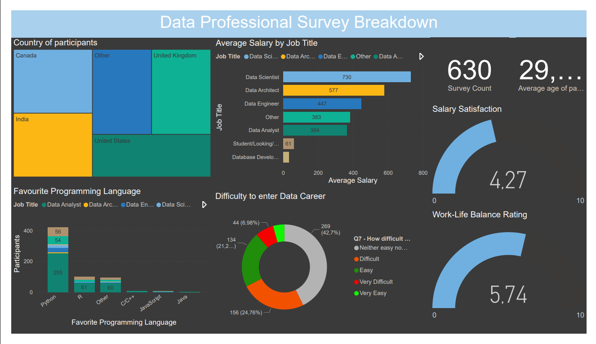

Data Science | BI | Machine Learning
Building practical data products for real operational problems.
I turn messy data into clear insight, explainable models, and polished decision-support tools. My portfolio combines business intelligence, predictive modelling, and South African problem solving.
Selected work
Projects that show the full data workflow
Data science product
Municipal Outage Risk Intelligence
A South African risk dashboard estimating where power interruptions can cascade into water shortages, clinic disruption, and SME trading losses. It includes explainable scoring, scenario modelling, impact estimates, and triage recommendations.
- React, TypeScript, Recharts
- Explainable risk model
- Public-sector decision support
Business intelligence
Data Careers Power BI Dashboard
A Power BI dashboard analysing data career salaries, satisfaction, roles, and work-life balance. The project demonstrates reporting, data cleaning, and stakeholder-focused visual design.
Open repository
MABI Business Hub Website
A responsive React and TypeScript website for a local co-working and business incubation hub, built with reusable components and practical SEO.
Open repositoryHousing Price Model Evaluation
Regression model comparison using Linear Regression, Lasso, and Ridge, with MAE, MSE, RMSE, R-squared, and residual diagnostics.
Open repositoryHousing Prices Prediction Model
A notebook-based housing price prediction workflow covering data preparation, feature exploration, regression modelling, and evaluation.
Open repositoryToolbox
What I bring into a data team
Python
Pandas
NumPy
Scikit-learn
Power BI
Excel
Regression modelling
EDA
Dashboard design
TypeScript